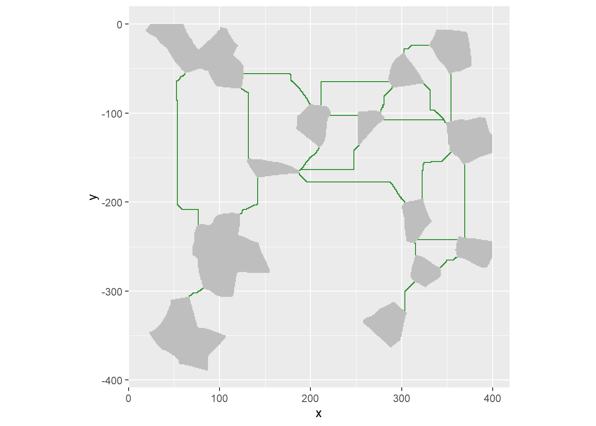
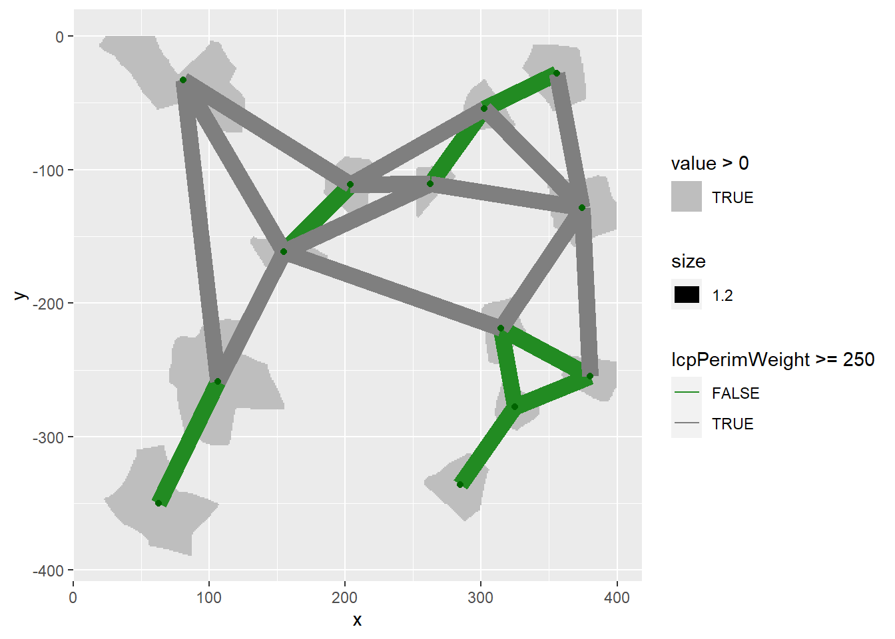
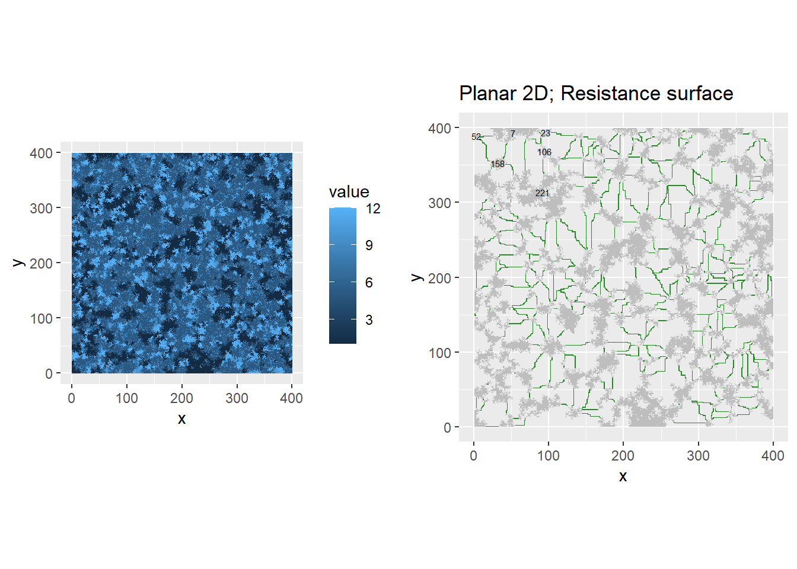
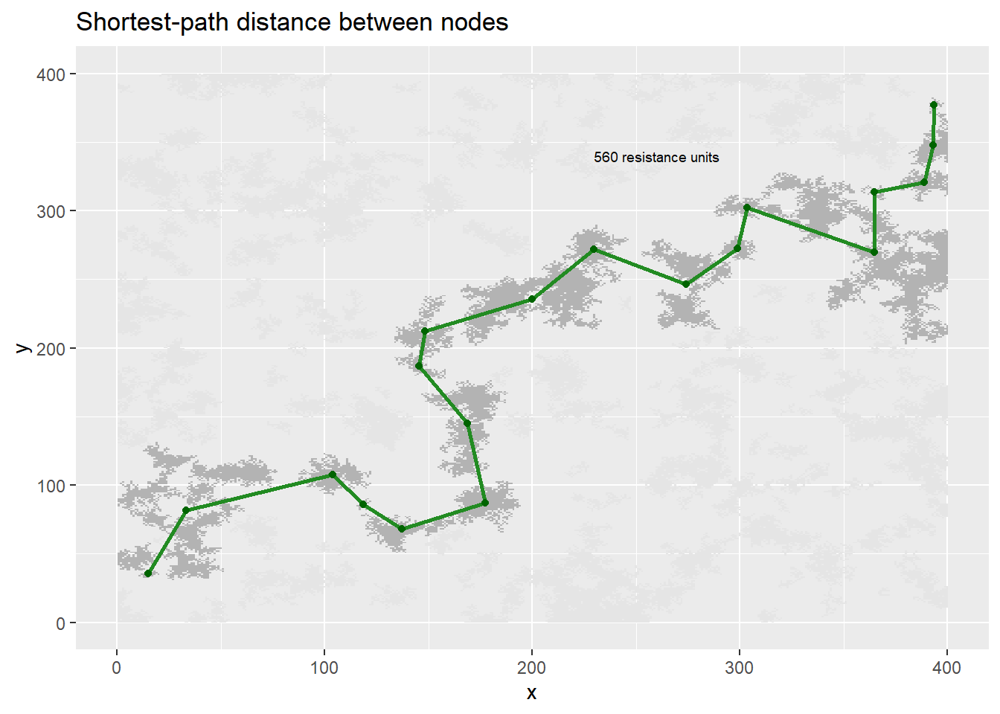
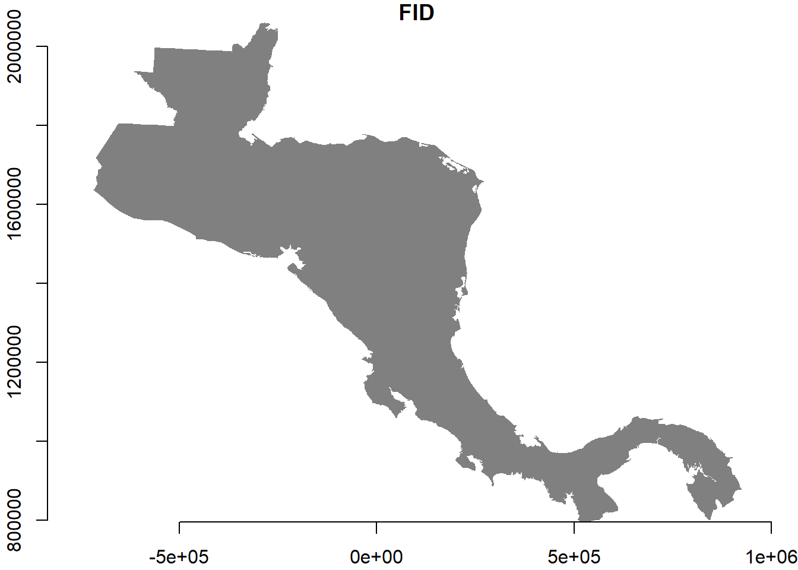
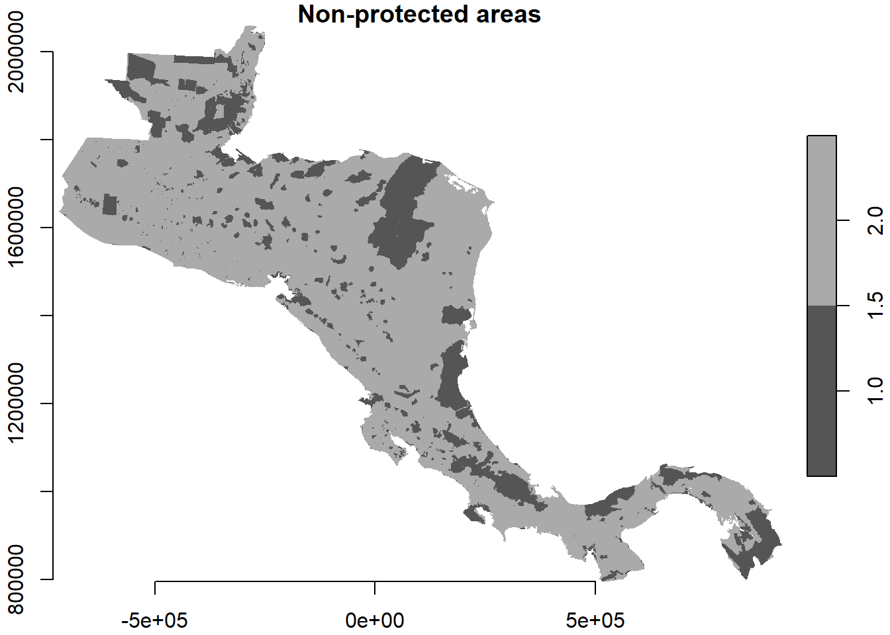
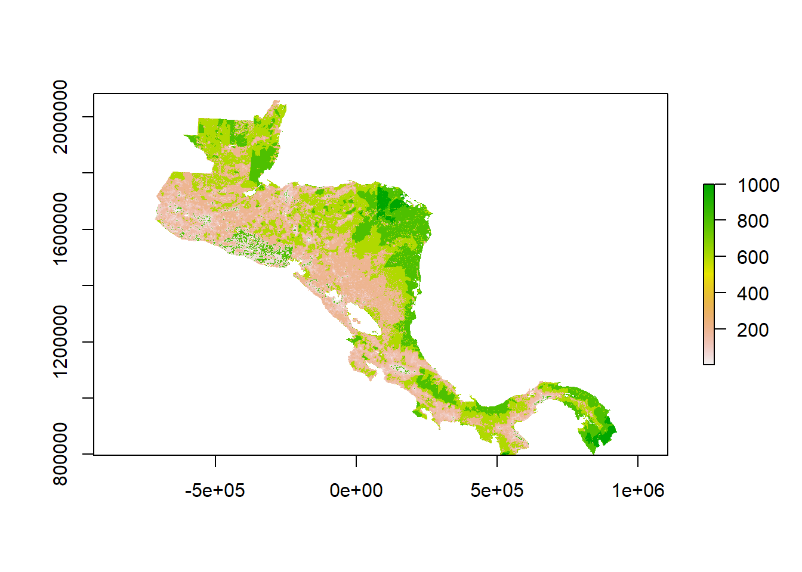
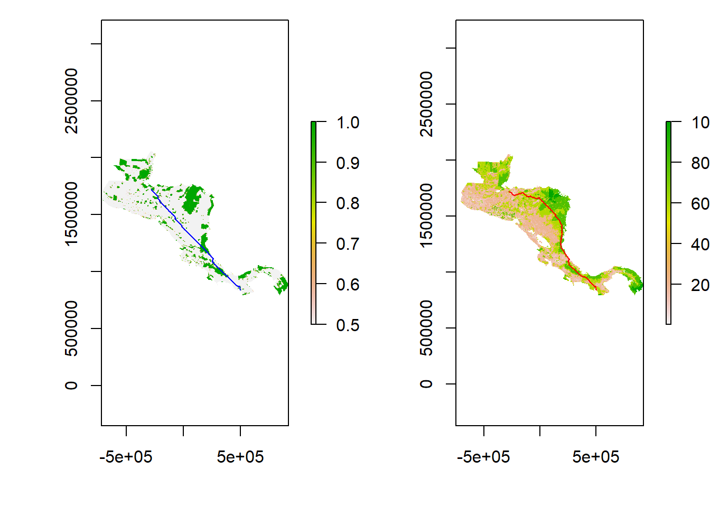

Chapter 3 Methods
We have a suite of different tools available for connectivity modelling. The following section is an actively updated workbook which trials these methods, summarizes them, and decides on the approach. In Chapters 4-6, we implement the models.
3.1 Connectivity
There are two general approached to performing connectivity mapping. Firstly, a least-cost-path approach where we can use graph theory to solve the easiest path from point A to point B. This is a deterministic approach where you get the same result each time and one route with no error. The second approach uses electrical theory to apply a charge across and landscape and measure the resulting current. This is a probabilistic approach. Both approached require the input of a “cost surface” or “conductance surface” - a raster detailing the ease of movement. For more details, see below:
3.1.1 Least Cost Paths
In a nutshell, Grainscape takes a landscape resistance surface, creates grains of connectivity and minimum planar graph models that can be used to calculate effective distances for landscape connectivity at multiple scales. We can also identify nodes through which we would like animals to move (e.g. starting point -> reefs; end points -> ridges).
Citations:
Chubaty A, Galpern P, Doctolero S (2020). “The R toolbox grainscape for modelling and visualizing landscape connectivity using spatially-explicit networks.” Methods in Ecology and Evolution, 11(4), 591-595. doi: 10.1111/2041-210X.13350 (URL: https://doi.org/10.1111/2041-210X.13350).
Chubaty A, Galpern P, Doctolero S (2020). Grainscape: Landscape Connectivity, Habitat, and Protected Area Networks_. R package version 0.4.3, <URL: https://CRAN.R-project.org/package=grainscape>.
Example:
Below shows a network of patches (cream colour) and resistances (other colours):
We then take this network of patches and calculate the ‘MPG’- the Minimum Planer Graph = an efficient approximation of all possible pairwise connections between nodes. We currently assume that the costs are all 1 between patches, but this can be altered to incorporate a resistance surface.
And then we can then visualize these associations:

We can then impose a threshold to define which patches are “linked” strongly and which are not. First we must define how many “units” a given organism can move over, for example here we could use 250. The green lines denote “connected” patches for this organism, the black unconnected.

The graph above shows that this species would see the landscape as 6 discrete units. Whilst this is superficially useful, it is not really what we are trying to achieve in this project.
3.1.1.1 Distance between nodes
The reason why Grainscape was create was to create the following graph. It represents a model which:
- is aware of a spatially-explicit landscape
- incorporates the shape, size and configuration of two-dimensional node patches (e.g. protected areas)
- can handle continuous geographic variation (resistance) in the spaces between the nodes (i.e., the matrix)
In a minimum planar graph (MPG) the matrix presents resistance to connectivity and influences the paths and therefore the lengths of the links. The shape, size and configuration of patches with respect to their neighbors that influences where on the patch perimeters these links begin and end. The value of using patch perimeters rather than centroids is that it potentially improves the estimation of the shortest paths among patches.

There are many other options for types of analysis, but one of the things we can do is finding the shortest route between two patches.
Finding the shortest path through the network from a source to a destination node and the length of that path is a useful prediction of the network model and has many applications. It gives an expected distance through the network, taking into account the modeled connectivity among nodes.

3.1.1.2 How we could use this framework
We could use this framework to evaluate the least cost path between protected reef/coastline areas, up to the ‘nearest’ elevation park by distance. This would, initially at least, give use a candidate set of locations with which we can use “high” resolution models to evaluate at the local scale (see the Circuitscape section).
3.1.1.3 Costa Rica example
To demonstrate the type of information we can get from a least cost paths approach we will use Costa Rica as a case study. First we input the data:
Our area of interest is:

We then import the protected areas and give them a lower resistance (1) the surrounding areas (2):

We can then add in the human modification index, and adjust the conductance scores according to the levels of human modification (1000 = high conductance, 1 = low conductance).

We can then use this to calculate the least cost path. We subsequently discovered that there are variety of packages to perform this calculation.
All packages lean on ‘gdistance’ to implement least cost paths. A second package, which focuses on human movement, ‘leastcostpath’ also provides some useful functions.
We can then pick two locations, one as a source node, the other as a destination. Lets compare two different cost surfaces, one which just has protected none protected (left) and one which incorporates HMI:
Setup a start and end point thenn run the calculations and plot the resulting paths:

As you can see the second example makes more “sense” from an animals perspective. We can also calculate the distance the line takes, for example for the protected/non-protected example it is 1268.4 km, and for the human modification index example it is 1539.1 km.
We can now design a loop to run from source locations of interest, to end nodes of interest (see Chapter 5).
3.2 Probalistic approach
One of the principal concerns with least cost paths is that they do not consider alternative routes to the one determined. To get around this we will use the ‘Circuitscape’ framework to create high resolution probabilistic maps. Circuitscape has rapidly become the most widely used connectivity analysis package in the world. It is used by numerous state, federal, and local agencies worldwide. The data output can be used for spatially explicit conservation planning.
Circuitscape uses circuit theory to predict movements of animals and how these affect overall population connectivity. It equates the flow of animal movement across a heterogeneous landscapes to the flow of electrical current through a circuit. Using a “resistance surface” which reflects a map of habitats available to animals - neighboring grid cells are connected by resistors, whose level of resistance represents the friction of the landscape to animal movement (i.e., low resistance grid cells are most likely to be traversed, high resistance cells less likely). Circuitscape solves the optimum routes through these resistance surfaces in a probabilistic fashion.
The output below shows the application of ‘circuitscape’ to model the connectivity of protected areas for tigers in an Indian province: